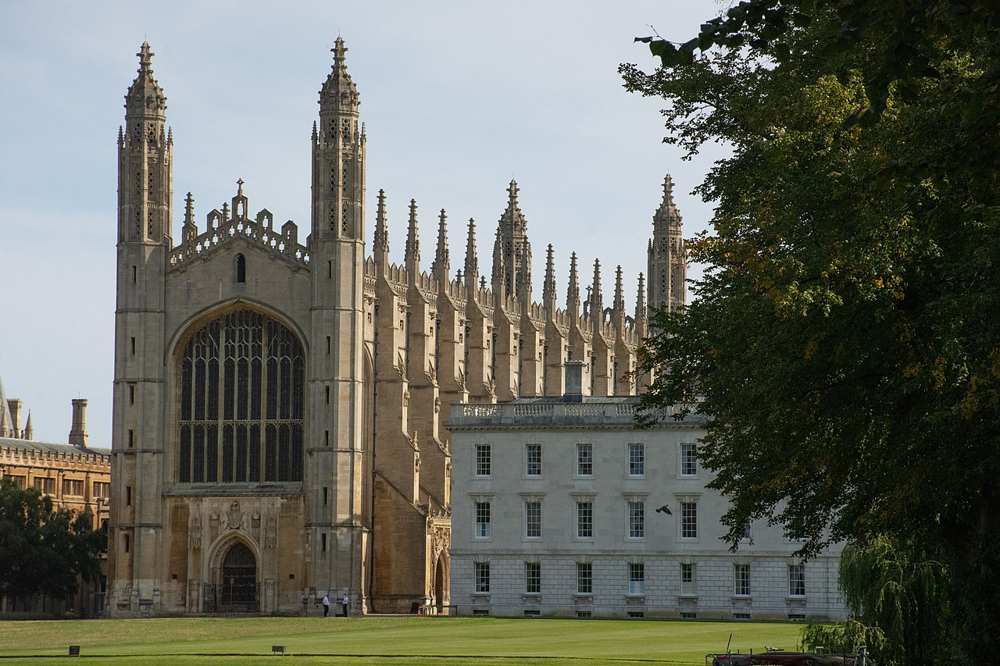
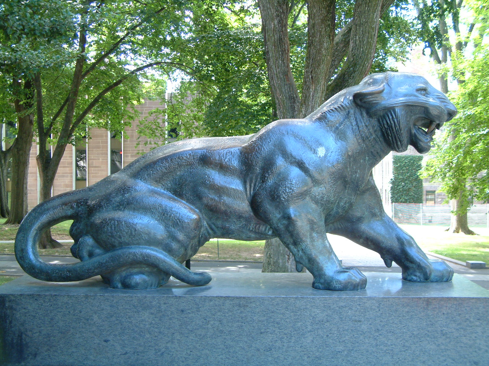
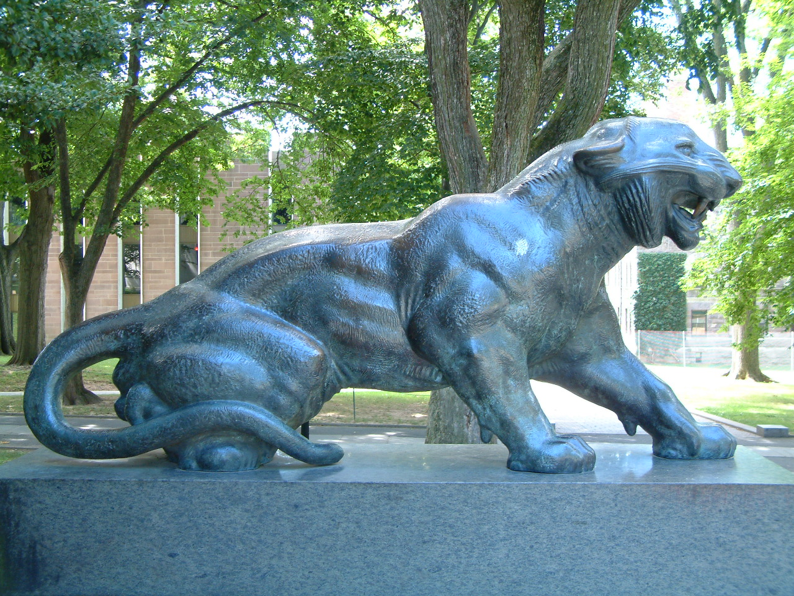

Turing studied mathematics and earned both bachelor's and master's degree at King's College, Cambridge. He later earned his doctorate from Princeton University in 1938.


King's College, University of Cambridge

Turing studied mathematics and earned both bachelor's and master's degree at King's College, Cambridge. He later earned his doctorate from Princeton University in 1938.